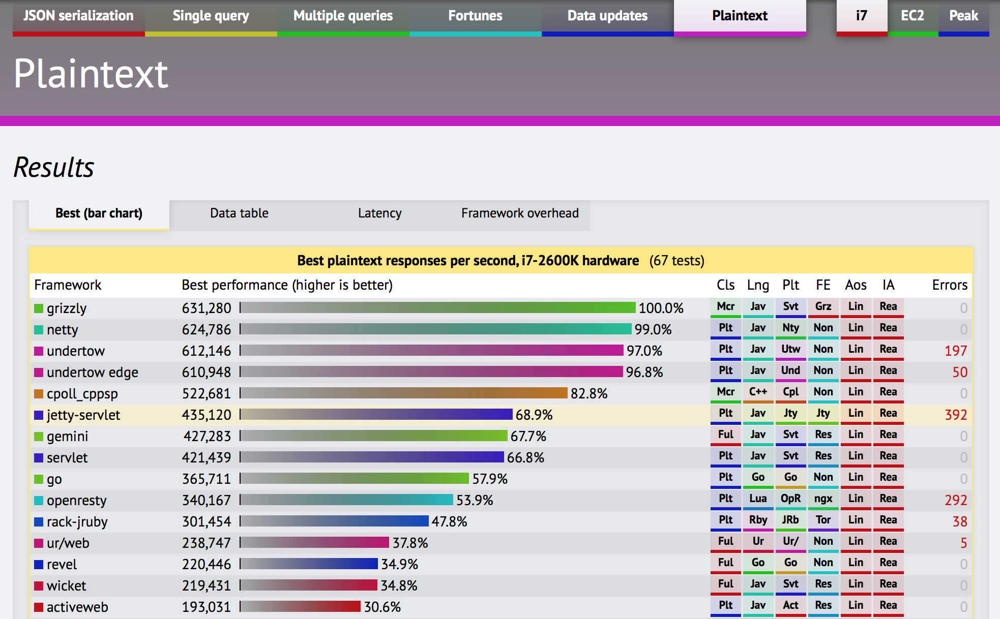

Netty 시작하기 (1)
고성능 네트워크 애플리케이션 프레임워크
김대현
* 2015, Netty 기반 서버 개발 * 2013, 사내 Redis SaaS 개발팀장, 160+ VM * 2010, 클라우드, 네트워크 파일동기화 프로토콜 설계 * 2010, MyPeople, 네트워크 아키텍쳐 설계 * 2009, Cafe 채팅 부하분산 서버 개발 * 2004, Cafe 한줄메모장 개발, 일일 3억 PV
과정
- Netty의 기본 설명
- 문제 풀이
- 예제 이해 / 실습 개발
목표
- Event-Driven, 비동기 I/O 이해
- Netty로 개발 경험
- (조만간) 실무에 응용
매 시간 구조
1. 설명 (20분) 1. 예제 설명 / 데모 (10분) 1. pair 실습 (25분) * 총 9개 문제 풀이
얼마나 빠른가? netty servlet
Event-Driven Programming
In computer programming, event-driven programming is a programming paradigm in which the flow of the program is determined by events such as user actions (mouse clicks, key presses), sensor outputs, or messages from other programs/threads. Event-driven programming is the dominant paradigm used in graphical user interfaces and other applications (e.g. JavaScript web applications) that are centered on performing certain actions in response to user input. Wikipedia
사건 기반 프로그래밍
사건 기반 프로그래밍(영어: Event-driven programming; EDP)은 비주얼 베이직과 같이, 사용자의 명령·마우스 클릭·다른 프로그램의 메시지·키보드 글쇠 입력 등의 ‘사건’에 따라, 제어 흐름이 결정되어 일을 하도록 하게끔 만들어진 프로그래밍 언어 방식을 뜻한다.위키백과
Channel관련 인터페이스 전체 구조

src/nettystartup/h1/discard/DiscardServer.java
public final class DiscardServer {
public static void main(String[] args) throws Exception {
EventLoopGroup bossGroup = new NioEventLoopGroup(1);
EventLoopGroup workerGroup = new NioEventLoopGroup();
try {
ServerBootstrap b = new ServerBootstrap();
b.group(bossGroup, workerGroup)
.channel(NioServerSocketChannel.class)
.handler(new LoggingHandler(LogLevel.INFO))
.childHandler(new DiscardServerHandler());
ChannelFuture f = b.bind(8010).sync();
System.err.println("Ready for 0.0.0.0:8010");
f.channel().closeFuture().sync();
} finally {
workerGroup.shutdownGracefully();
bossGroup.shutdownGracefully();
}
}
}
src/nettystartup/h1/discard/DiscardServerHandler.java
class DiscardServerHandler extends ChannelInboundHandlerAdapter {
@Override
public void channelRead(C..H..Context ctx, Object msg) throws Exception {
ByteBuf buf = (ByteBuf) msg;
try {
// discard
} finally {
buf.release(); // 이 부분은 두번째 시간에 설명합니다.
}
}
@Override
public void exceptionCaught(C..H..Context ctx, Throwable cause) {
cause.printStackTrace();
ctx.close();
}
}
test/.../h1/discard/DiscardServerHandlerTest.java
public class DiscardServerHandlerTest {
@Test
public void discard() {
String m = "discard test\n";
EmbeddedChannel ch = new EmbeddedChannel(new DiscardServerHandler());
ByteBuf in = Unpooled.wrappedBuffer(m.getBytes());
ch.writeInbound(in);
ByteBuf r = (ByteBuf) ch.readOutbound();
assertThat(r, nullValue());
}
}
첫번째 실습: EchoServer
* ```EchoServer``` * ```EchoServerHandler``` * ```EchoServerHandlerTest```
src/nettystartup/h1/echo/EchoServer.java
public final class EchoServer {
public static void main(String[] args) throws Exception {
EventLoopGroup bossGroup = new NioEventLoopGroup(1);
EventLoopGroup workerGroup = new NioEventLoopGroup();
try {
ServerBootstrap b = new ServerBootstrap();
b.group(bossGroup, workerGroup)
.channel(NioServerSocketChannel.class);
// TODO: [실습 1-1] 이 부분을 채워서 EchoServerHandler를 등록합니다
ChannelFuture f = b.bind(8020).sync();
f.channel().closeFuture().sync();
} finally {
workerGroup.shutdownGracefully();
bossGroup.shutdownGracefully();
}
}
}
src/nettystartup/h1/echo/EchoServerHandler.java
class EchoServerHandler extends ChannelInboundHandlerAdapter {
@Override
public void channelRead(ChannelHandlerContext ctx, Object msg) {
// TODO: [실습1-2] 받은대로 응답하는 코드를 한 줄 작성합니다. release는 필요하지 않습니다.
}
@Override
public void channelReadComplete(ChannelHandlerContext ctx) {
ctx.flush();
}
@Override
public void exceptionCaught(ChannelHandlerContext ctx, Throwable cause) {
cause.printStackTrace();
ctx.close();
}
}
test/nettystartup/h1/echo/EchoServerHandlerTest.java
public class EchoServerHandlerTest {
@Test
public void echo() {
String m = "echo test\n";
EmbeddedChannel ch = new EmbeddedChannel(new EchoServerHandler());
ByteBuf in = Unpooled.copiedBuffer(m, CharsetUtil.UTF_8);
ch.writeInbound(in);
ByteBuf r = (ByteBuf)ch.readOutbound();
releaseLater(r);
assertThat("응답이 없습니다", r, notNullValue());
assertThat("참조수는 1이어야 합니다",r.refCnt(), is(1));
assertThat("수신한 텍스트가 결과로 와야합니다", r.toString(CharsetUtil.UTF_8), equalTo(m));
}
}